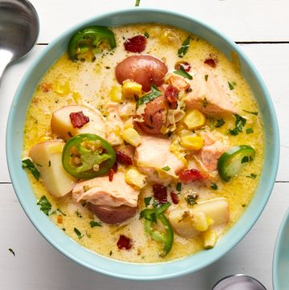

Salmon Chowder

Description:
The easiest way to get the taste of a cool crisp seaside day
no matter where you live is a bowl of steaming hot salmon
chowder. This version is packed with tender, flaky fish, fresh
sweet corn kernels, and rings of spicy jalapeño. Similar to a
classic New England clam chowder, this recipe has all the most
important qualities of a good chowder, aka it's a thick seafood
soup or stew that combines vegetables with other ingredients like
cream, corn, and potatoes.
Ingredients:
- 4 slices thick-cut bacon, cut crosswise into 1/4"-wide strips
- 2 medium leeks, white and pale green parts only, thinly sliced and rinsed
- 2 tbsp. butter or extra-virgin olive oil
- 4 cloves garlic, minced)
- 1 jalapeño, stemmed, seeded, and minced, plus 1 thinly sliced, for garnish
- 1 lb. baby red potatoes, quartered
- 2 c. water
<1i>1 c. clam juice
<1i>1 tsp. tsp. fresh thyme leaves, roughly chopped
<1i>1 bay leaf, Kosher salt, Freshly ground black pepper
<1i>1 (1 1/2-lb.) skinless salmon fillet, cut into 1" pieces
<1i>2 1/4 c. fresh or frozen corn kernels (from about 3 ears)
<1i>3/4 c. heavy cream
<1i>2 tbsp. fresh lemon juice
<1i>1/4 packed fresh parsley leaves, roughly chopped, divided
How to Make Salmon Chowders
- In a large pot over medium heat, cook bacon, stirring
occasionally, until golden and crisp, 8 to 10 minutes.
Transfer bacon to a paper towel-lined plate; discard any
excess fat.
- Return pot to medium heat. Cook leeks and butter, stirring
occasionally, until tender, about 2 minutes. Stir in
garlic and minced jalapeño and cook, stirring constantly,
until garlic is golden and fragrant, about 1 minute.
- Add potatoes, water, clam juice, thyme, bay leaf, 1 1/4
tsp. salt, and 1/2 tsp. black pepper. Bring to a boil,
then cover and reduce heat to medium-low. Simmer until
potatoes are knife-tender, about 10 minutes.
- Increase heat to medium-high. Season salmon with 1/2 tsp.
salt and add to pot along with cooked bacon, corn, and
cream. Cook, stirring gently a few times (so you don’t
break up salmon too much), until salmon is just cooked
through and corn is crisp-tender, about 4 minutes. Stir
in lemon juice and half of parsley; season with salt and
black pepper.
- Divide soup among bowls. Top with remaining parsley
and sliced jalapeño.
Go back to main page